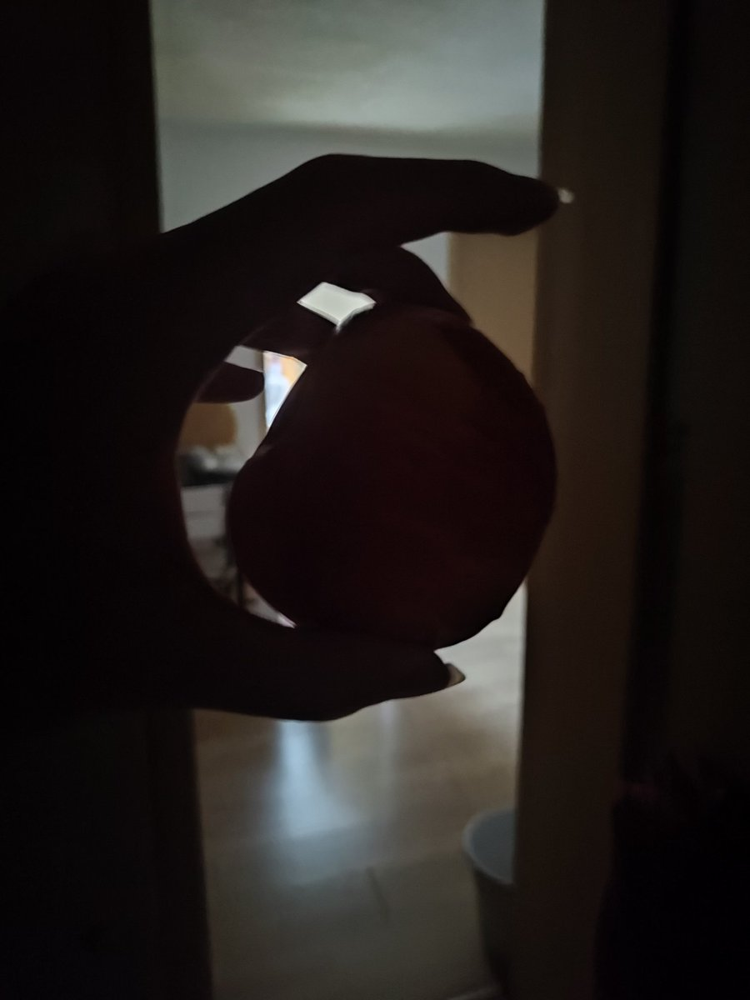
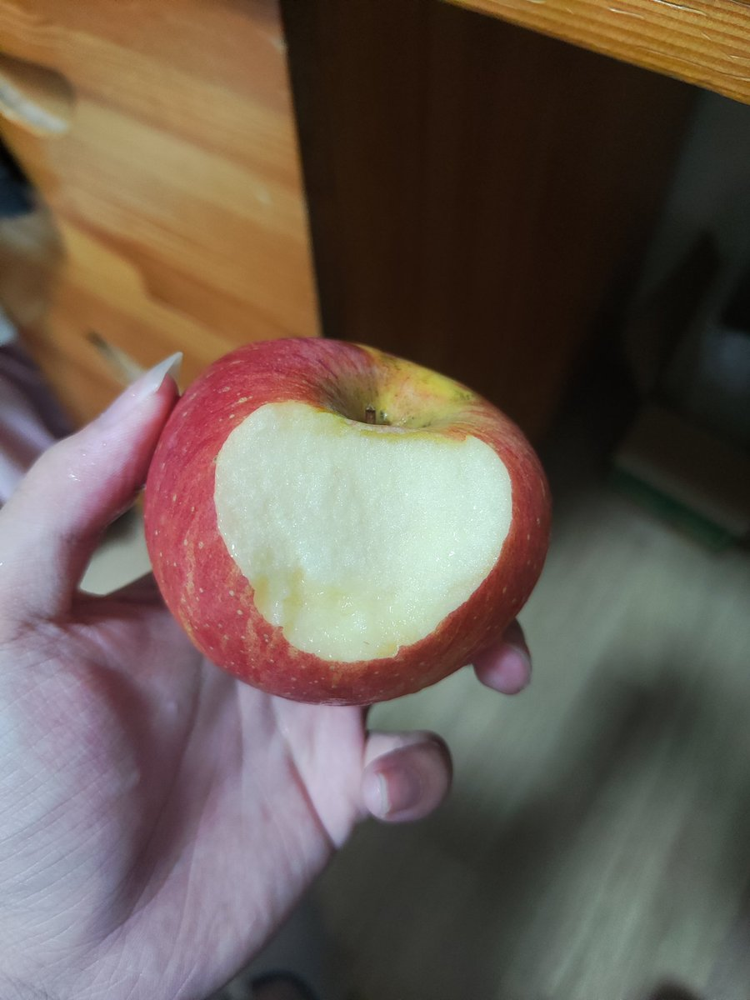

orange
@orange219695619
@Oz_Garlandd 这苹果看着就好吃😋


Gar1andd
@Oz_Garlandd
我想起来了我半夜还吃了个🍎 还是翻相册得知的😋脆脆的 很甜
我也稍微想起来做的一点梦..梦里好多人被绝望抓住 有人不停的割开皮肤 直至砍下肢体 血流全身 有人服下毒药 还追加毒酒 就算跌跌撞撞 血滴入酒杯中仍然强迫喝下 有人互相残杀 而我只是看着眼前的偌大庄园与一切付之一炬 无比冷静 https://t.co/P8E9UO3465 https://t.co/KB5dfHq0rx